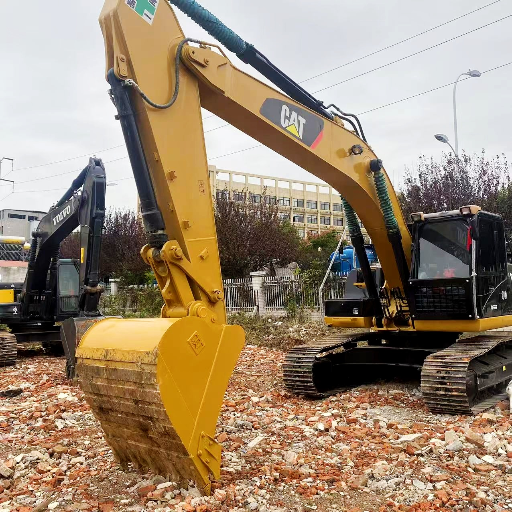

Refurbished Caterpillar Cat 324 Excavator
The Caterpillar Cat 324 Excavator is a versatile and reliable machine designed for medium to large-scale excavation and construction tasks. Renowned for its strength, durability, and advanced technology, the Cat 324 is a powerful tool in industries like construction, mining, and utility work. When refurbished, it becomes a cost-effective option for businesses looking to achieve the performance of a new excavator without the high price tag.
Honestly, it's almost impossible to buy a brand new excavator from China. They either don't exist or are made in China. If a Chinese seller tells you their Caterpillar/Komatsu/Volvo/Kobelco/Hitachi is brand new, they're lying. Therefore, a refurbished excavator is your best bet.

Here are the detailed specifications for a refurbished Caterpillar Cat 324 excavator:
Operating Weight and Dimensions
- Operating Weight: 24,500–25,000 kg
- Transport Length: ~9.8–10.0 meters
- Transport Width: ~3.2 meters
- Transport Height: ~3.0–3.2 meters
- Tail Swing Radius: ~3.6–3.7 meters
- Track Width: 600–800 mm standard
- Counterweight: ~5.4 metric tons
Engine and Powertrain
- Engine Model: Cat C7.1 (Tier 4 Final / EU Stage V in newer builds; Tier 3 in older refurb units)
- Rated Power Output: ~151–164 kW (202–220 hp) @ 1,800 rpm
- Fuel Tank Capacity: ~410–450 liters
- Travel Speed: 3.5–5.0 km/h
- Swing Speed: ~11 rpm
- Altitude Capability: Up to 3,000 m without derate
Hydraulic System
- Main Pump Type: Load-sensing, variable displacement piston pumps
- Flow Rate: ~2 × 320–340 L/min
- System Pressure: Up to 35 MPa
- Hydraulic Oil Capacity: ~400–450 liters
- Smart Modes:
- Auto Dig Boost
- Heavy Lift Mode
- Auto Hydraulic Warm-Up
Performance Metrics
- Bucket Capacity: 1.0–1.4 m³ (SAE heaped)
- Max Digging Depth: ~6.7–7.0 meters
- Max Reach (Horizontal): ~10.5–11.0 meters
- Max Dump Height: ~6.5–6.8 meters
- Bucket Digging Force: ~170–180 kN
- Arm Digging Force: ~120–130 kN
Cab and Operator Features
- Cab Type: ROPS/FOPS certified
- Display: LCD monitor or touchscreen (varies by build year)
- Controls: Pilot-operated or electro-hydraulic joysticks
- Comfort: Adjustable air-suspension seat, HVAC, low-noise cab
- Visibility: Panoramic glass, optional rear-view camera, LED lighting
Smart Features and Efficiency
- Technology Suite (varies by build year):
- Cat Grade with 2D
- Grade Assist
- Payload Measurement
- Work Tool Recognition
- Operating Modes: Power, Smart, ECO
- Emissions Control:
- Tier 3: mechanical injection, no aftertreatment
- Tier 4 Final: DOC + DPF + SCR
- Ambient Capability:
- High temp: up to 52°C
- Cold start: down to –18°C
Attachments Compatibility
- Standard Bucket: 1.0–1.4 m³
- Optional Tools: Hydraulic breaker, demolition shear, ripper, compactor
- Quick Coupler: Hydraulic (Cat Pin Grabber or Smart Coupler)
Refurbishment Scope
Refurbished Cat 324 units typically include:
- Engine Overhaul: Turbocharger, injectors, cooling system, emissions service
- Hydraulic Restoration: Pump recalibration, valve block testing, hose replacement
- Electrical Diagnostics: Monitor, sensors, wiring harness, telematics
- Cab Reconditioning: Seat, joysticks, HVAC, repainting
- Structural Repairs: Boom/bucket welding, bushing replacement, undercarriage rebuild
Overview of the Caterpillar Cat 324 Excavator
The Caterpillar Cat 324 is a mid-sized hydraulic excavator designed for tough tasks. Whether you're digging deep foundations, lifting heavy materials, or tackling earthmoving projects, the Cat 324 offers a combination of power, speed, and fuel efficiency. It is often used in infrastructure development, landscaping, trenching, and material handling due to its impressive performance and adaptability to various attachments.
As with all Caterpillar machinery, the Cat 324 is engineered for longevity and reliability, with components designed to endure long working hours in challenging environments.
Key Specifications of the Caterpillar Cat 324
-
Operating Weight: Around 24,500 - 27,000 kg (54,000 - 59,500 lbs)
-
Engine Power: Approximately 160 - 180 hp (119 - 134 kW)
-
Maximum Digging Depth: Up to 6.5 meters (21.3 feet)
-
Max Reach: Around 9 meters (29.5 feet)
-
Bucket Capacity: Typically 1.3 - 1.5 cubic meters (46 - 53 cubic feet)
-
Fuel Tank Capacity: About 400 liters (105.7 gallons)
-
Travel Speed: Up to 5.5 km/h (3.4 mph)
These specifications highlight the Cat 324’s ability to handle a variety of tasks efficiently, making it suitable for both light and heavy construction work.
Performance and Efficiency
The Caterpillar Cat 324 Excavator is designed for high performance, ensuring that operators can complete tasks quickly and effectively. Its advanced hydraulic system, along with a fuel-efficient engine, provides excellent digging force and lifting capabilities. Whether you're working in tight urban environments or on expansive job sites, the Cat 324 delivers a strong balance of speed, power, and fuel economy.
Key Performance Features:
-
Hydraulic Efficiency: The Cat 324 is equipped with a high-performance hydraulic system that enables fast and efficient cycles. The hydraulic system’s quick response times and power enable operators to complete tasks like lifting, digging, and grading with ease, increasing productivity.
-
Fuel Efficiency: Fuel efficiency is a significant consideration for any heavy machinery, and the Cat 324 excels in this area. With advanced fuel-saving technology, this excavator minimizes fuel consumption, reducing operational costs without sacrificing performance.
-
Versatile Power: The Cat 324 is built to handle a wide range of tasks. Whether you’re lifting heavy materials, digging deep trenches, or handling demolition projects, the Cat 324 provides the necessary power for each job, increasing overall productivity on the worksite.
-
Speed and Precision: The machine’s fast cycle times and responsive controls make it ideal for projects that require both speed and precision. This ensures that the Cat 324 performs efficiently in both high-pressure environments and delicate work.
Durability and Longevity
Caterpillar is known for manufacturing equipment that stands the test of time, and the Cat 324 is no exception. Built with high-quality components and a robust frame, the Cat 324 is designed to last for many years with proper maintenance.
Durability Features:
-
Reinforced Boom and Arm: The boom and arm of the Cat 324 are reinforced to withstand the stresses of heavy lifting and digging. This ensures that the excavator can handle even the toughest work environments without experiencing premature wear or damage.
-
Heavy-Duty Undercarriage: The undercarriage of the Cat 324 is built to provide stability and durability, especially when working on uneven terrain. This enhances the machine's overall performance and helps prevent damage from wear and tear, ensuring that the excavator can work continuously without frequent downtime.
-
Robust Engine: Caterpillar engines are known for their reliability, and the Cat 324 is powered by a durable engine designed to withstand long hours of operation in demanding conditions. Its powerful engine allows the excavator to perform a wide range of tasks without failure.
Operator Comfort and Safety
Operator comfort is a critical consideration when selecting equipment for demanding tasks. The Caterpillar Cat 324 is designed with an ergonomic cabin that minimizes fatigue and maximizes productivity during long shifts. Caterpillar's focus on safety ensures that operators have a secure and efficient working environment.
Comfort and Safety Features:
-
Spacious and Ergonomic Cabin: The Cat 324 comes equipped with a spacious cabin designed to reduce operator fatigue. The controls are within easy reach, and the seating is adjustable, allowing operators to customize their environment for maximum comfort. The air-conditioned cabin ensures a comfortable working environment in all weather conditions.
-
Visibility: With large windows and strategically positioned mirrors, the Cat 324 offers excellent visibility of the worksite. This is crucial for both operator safety and precision in tasks, ensuring that the operator can monitor the surroundings and minimize the risk of accidents or damage to the environment.
-
Advanced Safety Features: The Cat 324 includes several safety features, such as a roll-over protective structure (ROPS) and a falling object protective structure (FOPS) for the operator’s safety. Additional safety options include a rearview camera and proximity sensors to ensure that the operator is aware of nearby hazards.
Versatility and Attachments
One of the standout features of the Caterpillar Cat 324 is its versatility. The Cat 324 can be customized with various attachments that expand its functionality for a wide range of tasks. Whether you need to dig, break concrete, or handle materials, the Cat 324 can easily switch between different attachments, improving productivity and flexibility on the job site.
Common Attachments for the Cat 324:
-
Buckets: Whether you're digging in soft soil or breaking through tough rock, the Cat 324 can be fitted with various bucket types, including general-purpose buckets, heavy-duty rock buckets, and specialized buckets for fine grading.
-
Hydraulic Breakers: Hydraulic breakers are ideal for demolition tasks, breaking through concrete, asphalt, and rocks with ease.
-
Augers: Used for drilling deep holes in the ground for foundation work, pole installations, and other underground applications.
-
Grapples: These are useful for handling logs, scrap materials, and other loose materials.
-
Quick Couplers: Quick couplers allow for easy switching between attachments without needing to leave the operator’s seat, reducing downtime and increasing efficiency.
These attachments add value to the Cat 324, making it an adaptable and flexible machine suitable for various industries and applications.
Benefits of Purchasing a Refurbished Caterpillar Cat 324 Excavator
Buying a refurbished Caterpillar Cat 324 Excavator offers a number of advantages for businesses looking to save on costs without sacrificing the performance or reliability of a new machine.
Key Benefits:
-
Lower Initial Investment: Refurbished Cat 324 excavators offer a significantly lower upfront cost compared to new models. This allows businesses to allocate funds elsewhere while still acquiring a machine with the performance capabilities of a new one.
-
Thorough Inspection and Reconditioning: Refurbished Cat 324 machines undergo a rigorous inspection and reconditioning process to ensure they meet Caterpillar's high standards for performance, safety, and reliability.
-
Warranty Coverage: Many refurbished models come with a warranty, providing peace of mind and protection against unexpected repairs.
-
Environmentally Friendly: Purchasing a refurbished machine helps reduce the environmental impact by extending the life of an existing product, which in turn reduces the demand for new manufacturing.
Maintenance Tips for the Caterpillar Cat 324 Excavator
Proper maintenance is essential for ensuring that your Caterpillar Cat 324 runs smoothly for years. Regular maintenance minimizes the need for repairs, maximizes uptime, and extends the lifespan of the machine.
Key Maintenance Recommendations:
-
Hydraulic System: Regularly check for leaks, ensure that hydraulic fluid levels are within the recommended range, and inspect hoses and cylinders for wear.
-
Engine Maintenance: Follow recommended schedules for oil changes, air filter replacement, and inspection of fuel systems.
-
Undercarriage: Inspect the undercarriage for wear or damage, including checking track tension and cleaning debris from the tracks regularly.
-
Cooling System: Keep the radiator free from debris and check coolant levels to prevent overheating.
Conclusion
The Caterpillar Cat 324 Excavator is a reliable and powerful piece of equipment, perfect for medium to large-scale excavation and construction tasks. When refurbished, it provides a cost-effective solution without compromising on performance or durability. With advanced hydraulics, superior fuel efficiency, operator comfort, and the flexibility to handle a variety of tasks, the Cat 324 is an excellent choice for businesses looking for versatility and long-term value.
By purchasing a refurbished Cat 324, companies can benefit from a high-quality machine at a fraction of the cost of a new one while enjoying the same level of performance and durability. Whether you're involved in construction, mining, or utility
Our Commitment
- 2 years / 4000 hours warranty.
- EPA certified.
- No sweatshop labor.
Contacts

- [email protected]
- Youtube Instagram Facebook
- Navigation: G206 (Sishu Bridge) in Changfeng County, Hefei City, Anhui Province, 200 meters north to the east